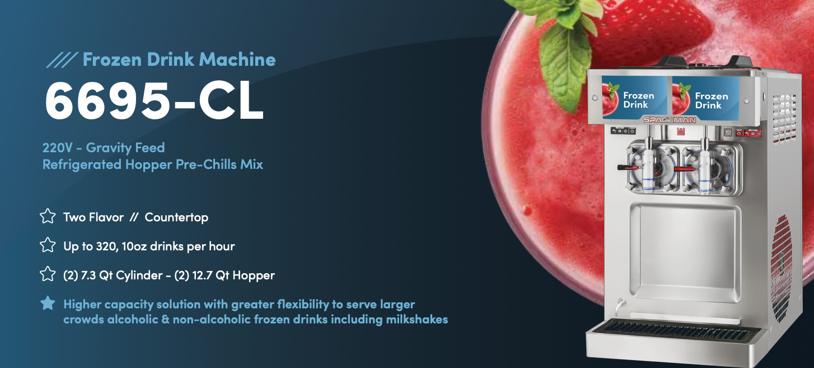
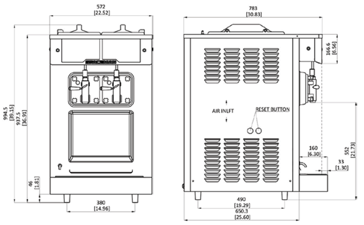

Fast Freeze Down Patented 100% Controlled Contact Flooded Evaporator – Designed for maximum efficiency, this innovation delivers the industry's fastest freeze-down and recovery times. The result? Smaller ice crystals and the smoothest, creamiest mouthfeel.
Reduced Parts – Easy Cleaning Single-Piece V3 Auger Design – The drive shaft and auger are combined into one solid over-molded plastic and steel piece, reducing parts, improving drink quality, cutting cleaning time, and enhancing the user experience.
Simple Control, Easy Operation Simple and intuitive control system makes operation and viscosity adjustment easy, swift and more precise.
RGB Display with Low-Level Indicator Quickly reference machine status with an RGB display, featuring a flashing red light when the product level is low.
Backlit Virtual Merchandising A high-visibility, illuminated display area for branding and marketing your product. Includes flavor cards, with dimensions available for custom designs.
Low-Mix Freeze Protection Proprietary technology prevents machine freeze-ups by automatically switching to standby mode when product runs out, ensuring uninterrupted operation.
Separate Hopper Cooling Controls Independently controls and cools each hopper to maintain ideal temperatures, prevent freezing around the sides, and optimize output by pre-chilling product before it enters the freezing cylinder.
Designed by Aerospace Engineers
Lower Your Cost of Ownership
Service on Your Terms

| Specification | Value |
|---|---|
| Flavors | 2 |
| Freezing Cylinders | 2 x 6.9L / 7.3 Qt |
| Mix Hoppers | 2 x 12L / 12.7 Qt |
| Output Capacity (10oz servings) | 320 servings/hr |
| Max Serving Size | 32oz |
| Clearance Requirements | 152mm / 6" |
| Kg / lb | |
|---|---|
| Net | 181 / 399 |
| Shipping | 199 / 439 |
| Volume | 1 CBM / 22 CBF |
| Dimension | Net (mm/in) | Shipping (mm/in) |
|---|---|---|
| Width | 572 / 23 | 610 / 24 |
| Depth | 783 / 31 | 860 / 34 |
| Height | 995 / 39 | 1170 / 46 |
| Electrical | Power (kW) | Total Amps (A) | Plug |
|---|---|---|---|
| 208–230/60/1 | 3.2 | 16 | L6-20P |
| Feature | Included |
|---|---|
| Control System | Two, Mechanical |
| Refrigerated Hopper | ✓ |
| Hopper Agitator | ✓ |
| Standby Mode | ✓ |
| Auto Closing Dispensing Valve | ✓ |
| Low Mix Indicator Light | ✓ |
| Low Mix Indicator Alarm | ✓ |
| Standby Indicator Light | ✓ |
| High Pressure Protection | ✓ |
| Thermal Overload Protection | ✓ |
| Light Box | ✓ |
| Option | Available |
|---|---|
| Top Air Discharge Chute | ✓ |
| Spinner | ✓ |
Above specifications are subject to change without notice.
Contact: 720-328-1020 / sales@spacemanusa.com / www.spacemanusa.com